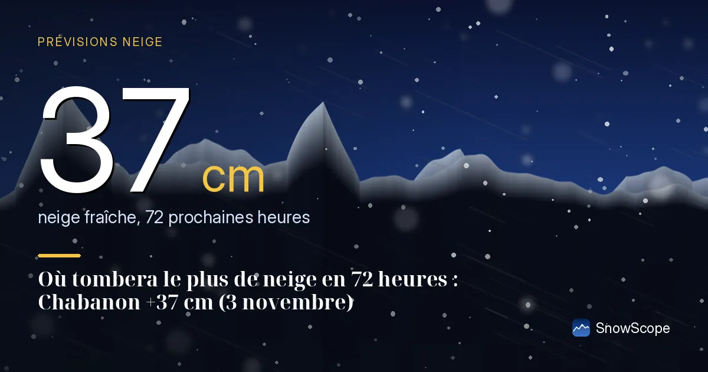
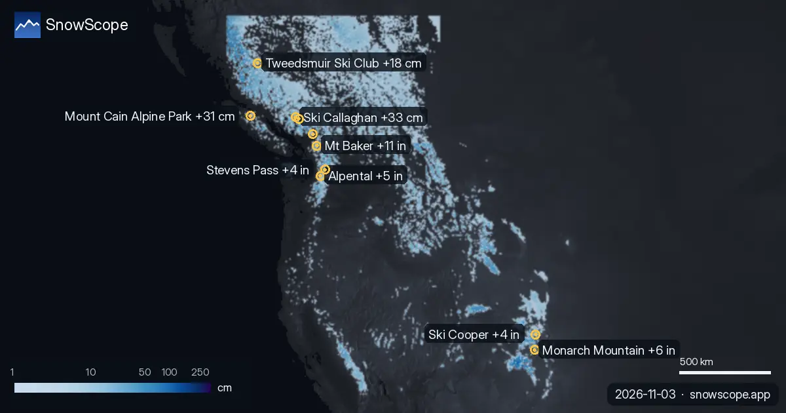

Où tombera le plus de neige en 72 heures : Chabanon +37 cm (3 novembre)
Chabanon, dans les Alpes françaises, recevra le plus de neige sur les montagnes de l'hémisphère nord au cours des trois prochains jours, atteignant 37 cm d'ici le 6 novembre. Nous suivons les 24 meilleurs domaines du monde pour vous montrer où les conditions seront optimales, à quelle altitude skier, et où se situe la limite de neige.
Consultez les prévisions neige en temps réel pour Chabanon sur l'application SnowScopeHauteurs de neige, alertes poudreuse et carte 3D, gratuitement.
Les Alpes dominent jusqu'à mercredi
Trois domaines français dominent la prévision pour 72 heures. Chabanon recevra 4 cm cette nuit, puis 33 cm de plus mercredi soir, avec la nouvelle neige restant légère au-dessus de 2 100 m. Dévoluy et Montclar suivent de près avec 34 cm et 33 cm respectivement, bien que les deux commencent plus lentement : Dévoluy n'aura que 2 cm cette nuit, Montclar 4 cm. La limite de neige dans la région se situe entre 2 100 m et 2 200 m, donc visez haut.
Les petits domaines des mêmes chaînes affichent aussi des chiffres intéressants. Chaillol, Isola 2000 et Val d'Allos devraient chacun recevoir 32–33 cm sur trois jours, tandis qu'Orcières Merlette atteint 30 cm. Isola 2000 fait exception : elle reçoit 12 cm dans les 24 prochaines heures seules, soit près du double de ses voisins. C'est à surveiller si vous prévoyez de partir tôt demain.
| # | Station | Région | +24 h | +72 h | Limite pluie-neige |
|---|---|---|---|---|---|
| 1 | Chabanon | Alpes · France | 4 cm | 37 cm | 2 100 m |
| 2 | Dévoluy | Alpes · France | 2 cm | 34 cm | 2 100 m |
| 3 | Montclar | Alpes · France | 4 cm | 33 cm | 2 200 m |
| 4 | Chaillol | Alpes · France | 2 cm | 33 cm | 2 100 m |
| 5 | Isola 2000 | Alpes · France | 12 cm | 32 cm | 2 000 m |
| 6 | Val d'Allos | Alpes · France | 3 cm | 32 cm | 2 000 m |
| 7 | Crissolo | Alpes · Italie | 12 cm | 31 cm | 1 700 m |
| 8 | Orcières Merlette | Alpes · France | 3 cm | 30 cm | 2 000 m |
| # | Station | Région | +24 h | +72 h | Limite pluie-neige |
|---|---|---|---|---|---|
| 1 | Mt Baker | Ouest américain · États-Unis | 0 in (0 cm) | 11 in (28 cm) | 5 200 ft (1 600 m) |
| 2 | Monarch Mountain | Ouest américain · États-Unis | 1 in (2 cm) | 6 in (14 cm) | 10 200 ft (3 100 m) |
| 3 | Alpental | Ouest américain · États-Unis | 0 in (0 cm) | 5 in (12 cm) | 6 900 ft (2 100 m) |
| 4 | Ski Cooper | Ouest américain · États-Unis | 1 in (3 cm) | 4 in (11 cm) | 10 500 ft (3 200 m) |
| 5 | Stevens Pass | Ouest américain · États-Unis | 0 in (0 cm) | 4 in (11 cm) | 6 900 ft (2 100 m) |
| 6 | Dutch Henry Ski Hill | Ouest américain · États-Unis | 1 in (3 cm) | 4 in (10 cm) | 10 500 ft (3 200 m) |
| 7 | Crystal Mountain | Ouest américain · États-Unis | 0 in (0 cm) | 4 in (10 cm) | 7 500 ft (2 300 m) |
| 8 | Copper Mountain | Ouest américain · États-Unis | 1 in (3 cm) | 4 in (9 cm) | 10 800 ft (3 300 m) |
| # | Station | Région | +24 h | +72 h | Limite pluie-neige |
|---|---|---|---|---|---|
| 1 | Ski Callaghan | Ouest canadien · Canada | 0 cm | 33 cm | 1 200 m |
| 2 | Mount Cain Alpine Park | Ouest canadien · Canada | 4 cm | 31 cm | 1 300 m |
| 3 | Whistler Blackcomb | Ouest canadien · Canada | 0 cm | 25 cm | 1 200 m |
| 4 | Tweedsmuir Ski Club | Ouest canadien · Canada | 0 cm | 18 cm | 1 300 m |
| 5 | Sasquatch | Ouest canadien · Canada | 0 cm | 14 cm | 1 400 m |
| 6 | Revelstoke | Ouest canadien · Canada | 0 cm | 11 cm | 1 400 m |
| 7 | Grouse Mountain | Ouest canadien · Canada | 0 cm | 10 cm | 1 400 m |
| 8 | Manning Park Resort | Ouest canadien · Canada | 0 cm | 6 cm | 1 400 m |

Les pentes exposées au sud de l'Italie interceptent la dépression
Crissolo, côté italien des Alpes près du Mont-Viso, se classe septième mondialement avec 31 cm prévus sur 72 heures et une limite de neige inhabituellement basse de 1 700 m. Cela signifie que la neige commencera à une altitude plus basse qu'en France, donc les pentes de mi-altitude resteront skiables. Crissolo reçoit aussi 12 cm dans les 24 prochaines heures, égalant Isola 2000.
La différence de limite de neige compte pour le manteau de neige en début de saison. À 1 700 m, la nouvelle neige s'ajoutera à la base existante, tandis qu'aux Alpes françaises du nord à 2 100 m vous construisez sur un manteau mince. Consultez la carte SnowScope pour voir où se trouve la neige précédente avant de vous déplacer.

Le Pacifique-Nord-Ouest domine l'Amérique du Nord
Mt Baker (État de Washington) doit recevoir 11 po (28 cm) sur 72 heures, pratiquement rien cette nuit. La limite de neige est prévue près de 5 200 ft (1 600 m), ce qui est inhabituellement bas pour novembre à l'ouest des Cascades, donc un manteau de neige important devrait atteindre les pentes de mi-altitude. Monarch Mountain au Colorado prend la deuxième place aux États-Unis avec 6 po (14 cm), mais sa limite de neige est 1 000 ft plus haute, limitant l'accumulation utile aux secteurs supérieurs.
Les petits domaines d'Alpental, Ski Cooper, Stevens Pass et Crystal Mountain devraient chacun recevoir 4–5 po (10–12 cm) d'ici mercredi. Dutch Henry et Copper Mountain figurent aussi au classement, bien que la limite de neige de Copper monte à 11 000 ft (3 300 m), l'accumulation restant réservée au terrain le plus élevé. Attendez-vous à de la neige mouillée ou de la pluie en dessous de cette altitude.
Ouest du Canada : une prévision contrastée
Ski Callaghan domine le Canada avec 33 cm prévus sur 72 heures, bien qu'elle ne reçoive aucune neige nouvelle dans les 24 prochaines heures. Mount Cain Alpine Park fait exception : elle reçoit 4 cm cette nuit, puis 27 cm de plus d'ici mercredi. Whistler Blackcomb, malgré sa taille, se classe troisième avec 25 cm, tous arrivant après demain matin. La limite de neige en Colombie-Britannique reste entre 1 200 m et 1 400 m.
Plus tard dans la fenêtre de prévision, Tweedsmuir, Sasquatch, Revelstoke et Grouse Mountain devraient chacun recevoir 10–18 cm. Ces chiffres représentent des estimations pour les secteurs supérieurs, donc l'accès via les remontées locales déterminera combien les skieurs en gagneront réellement. Manning Park Resort ferme la prévision avec seulement 6 cm, suggérant que le système s'affaiblit à l'intérieur ou aux altitudes inférieures.
Lire les chiffres : limite de neige et épaisseur
La limite de neige, indiquée pour chaque domaine, marque l'endroit où la nouvelle neige devient pluie ou neige mouillée. Cette ligne se situe environ 300 m au-dessous du niveau de congélation prévu. La neige au-dessus de la ligne reste sèche et légère ; en dessous, attendez-vous à de la neige lourde et mouillée ou simplement de la pluie. Le 3 novembre, la plupart des limites de neige alpines se situent entre 1 700 m et 2 200 m, tandis que les domaines nord-américains affichent des limites de 1 600 m (Mt Baker) à 3 300 m (Copper Mountain).
Ces totaux représentent la prévision de SnowScope pour les secteurs supérieurs de chaque domaine. L'accumulation exacte dépend de l'exposition, de l'altitude et du chemin de la dépression. La station météorologique locale d'un domaine, s'il en a une, vous montrera un point spécifique, pas la montagne entière. Utilisez la carte aux côtés des chiffres pour choisir votre itinéraire.
Que faire dans les 48 prochaines heures
La neige tombe cette nuit aux Alpes et au sud du Canada, donc un départ tôt demain à Chabanon, Isola 2000 ou Mount Cain vous permettra de tracer de la poudreuse fraîche. Mt Baker et le Pacifique-Nord-Ouest resteront secs jusqu'à demain, mais les conditions de poudreuse arrivent jeudi matin. Dans les Rocheuses du Colorado, Monarch et Ski Cooper verront de la neige cette nuit et mercredi.
Avant de charger la voiture ou de réserver un vol, rappelez-vous que les prévisions à trois jours changent. Consultez la carte SnowScope à nouveau le soir avant de vous déplacer. Si vous prévoyez de skier hors-piste ou en terrain avalancheux, lisez le bulletin officiel d'avalanche de votre région ; la neige fraîche sur une base mince peut signifier une instabilité.
Conseils aux skieurs
- Visez Chabanon ou Isola 2000 demain matin si vous pouvez atteindre les Alpes ; toutes deux reçoivent de la poudreuse fraîche cette nuit et tout au long de mercredi.
- À l'ouest des États-Unis, Mt Baker remporte la course, mais aucune neige fraîche ne tombe jusqu'à jeudi. Visez la première lumière jeudi si vous y allez.
- L'altitude compte. Les domaines avec des limites de neige au-dessus de 3 000 m (Monarch, Ski Cooper, Copper) auront de la poudreuse seulement sur leurs pentes les plus raides ; la mi-altitude restera mouillée ou pluvieuse. Choisissez plutôt Chabanon ou Mt Baker si vous voulez de la neige skiée sur une gamme d'altitudes.
- Avant de skier hors-piste ou de faire du ski de randonnée en terrain avalancheux, consultez le bulletin d'avalanche officiel de la région. La neige en début de saison sur une base mince peut être instable.
- Recevez une alerte poudreuse dans l'app SnowScope pour savoir exactement quand la neige fraîche arrive à votre domaine choisi, afin que vous puissiez planifier votre sortie.
À propos de ces chiffres
Les hauteurs de neige des stations sont la neige la plus épaisse sur le haut du domaine à la date indiquée ; ce sont des estimations pour une zone, pas une mesure en un point. Les prévisions peuvent changer. Consultez toujours le bulletin d'avalanche officiel avant le hors-piste.
Bulletins d'avalanche officiels: EAWS (Europe) · avalanche.org (US) · Avalanche Canada
Citer ce bulletin
Pour la recherche, l'enseignement ou la presse : chiffres et graphiques réutilisables librement sous CC BY 4.0 avec cette citation.
SnowScope (2026), Où tombera le plus de neige en 72 heures : Chabanon +37 cm (3 novembre), https://snowscope.app/blog/fr/2026/11/where-most-snow-falls-next-72-hours-3-november-2026.html, consulté le 2026-11-03
SnowScope (Atlas Labs). (2026, November 3). Où tombera le plus de neige en 72 heures : Chabanon +37 cm (3 novembre). SnowScope snow reports. https://snowscope.app/blog/fr/2026/11/where-most-snow-falls-next-72-hours-3-november-2026.html
BibTeX
@misc{snowscope2026wheremostsnowfallsnext72,
author = {{SnowScope (Atlas Labs)}},
title = {Où tombera le plus de neige en 72 heures : Chabanon +37 cm (3 novembre)},
year = {2026},
month = nov,
howpublished = {\url{https://snowscope.app/blog/fr/2026/11/where-most-snow-falls-next-72-hours-3-november-2026.html}},
note = {Published 2026-11-03 16:31 UTC; accessed 2026-11-03}
}· CC BY 4.0 · Méthodes, données et outils →
Chabanon : neige et température selon l'altitude, cet hiver vs l'hiver dernier (outils) →
Suivre Chabanon
Gratuit : un message quand la neige arrive, et la météo chaque matin.